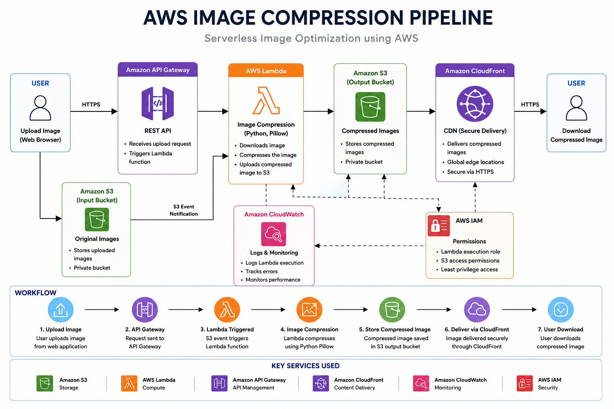
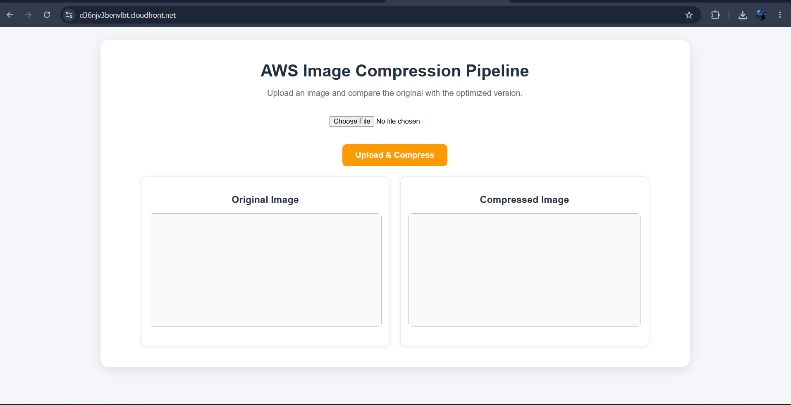
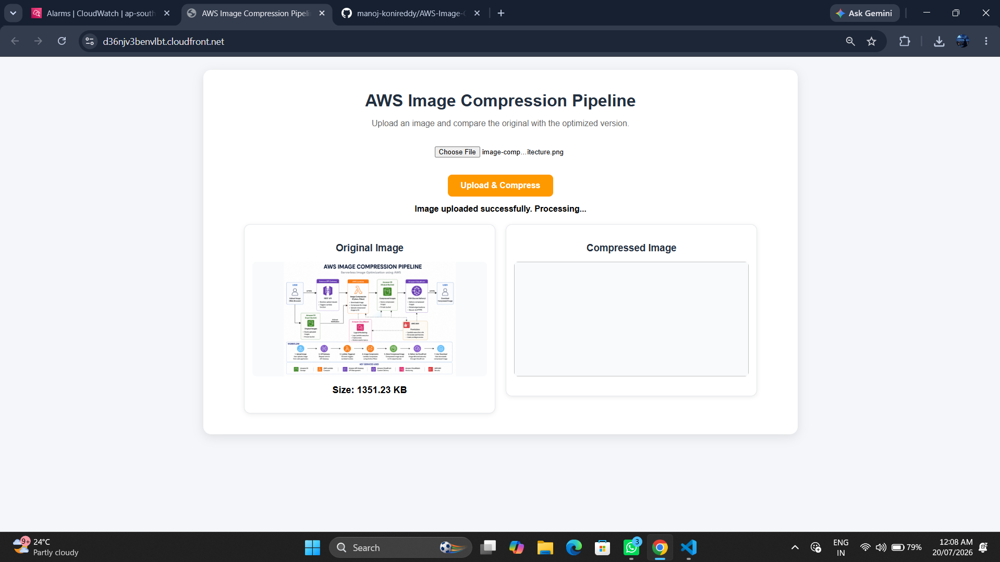
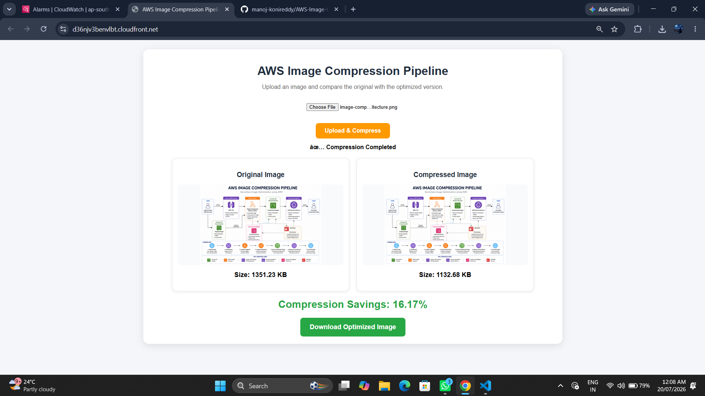

AWS Lambda • Amazon S3 • API Gateway • CloudFront • Python
A project-based serverless application that automatically compresses images using AWS Lambda, stores optimized files in Amazon S3, and securely delivers downloads through Presigned URLs.
Project source code and implementation details are available on GitHub. Live hosting is currently inactive.
Built entirely using AWS managed services with no servers to provision or maintain.
Image uploads automatically trigger AWS Lambda functions through S3 event notifications.
Compressed images are delivered using Presigned URLs without exposing storage buckets publicly.
Users upload images through a responsive web application and receive optimized versions automatically.
The solution leverages AWS services to process images efficiently while maintaining scalability and reliability.
The application was previously delivered through Amazon CloudFront. The AWS hosting environment is currently inactive; the source code and architecture remain available for review.

The workflow begins with image upload through the frontend. API Gateway invokes Lambda, images are stored in an S3 input bucket, processed automatically, saved to an output bucket, and securely delivered back to users.
Images are compressed immediately after upload.
Users can compare original and compressed images along with file size information.
All processing occurs within AWS without requiring local software installation.
User uploads an image from the browser.
S3 upload automatically triggers a Lambda function.
Python and Pillow optimize the image and store the result.
A secure Presigned URL is generated for download.

Responsive web interface where users upload images for automatic compression and optimization.

Successful image upload triggering the AWS serverless processing workflow.

Comparison between original and compressed images showing file size reduction and download capability.
Resolved browser communication issues by configuring API Gateway and Lambda response headers.
Implemented Presigned URLs to securely download files without making buckets public.
Configured S3 hosting and CloudFront distribution to support global access.
The application compresses images while maintaining visual quality.
Testing achieved significant file-size reduction and improved download performance.
The source code and implementation details are available in the GitHub repository.
Hands-on experience with AWS Lambda, S3, API Gateway, CloudFront, IAM, CloudWatch, and event-driven architecture.
I implemented the image-processing workflow using Python and an AWS Lambda function. The solution accepts uploaded image files, processes them with an image library, and writes optimized output to the designated storage location. The surrounding workflow connects upload events, processing, and output retrieval.
An image is uploaded to the input S3 bucket. The object-created event invokes the Lambda function, which validates and processes the image before saving the compressed result to the output bucket. API Gateway and CloudFront were part of the earlier access and delivery design. The AWS resources are no longer hosted, but the implementation and architecture remain documented in the repository.
The event-driven approach avoids keeping an application server running for each image-processing request. The project helped me understand event notifications, Lambda execution, file validation, image transformation, storage permissions, and the importance of handling unsupported or invalid image inputs.